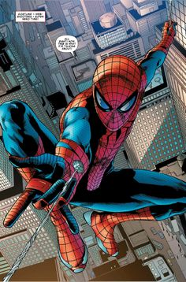
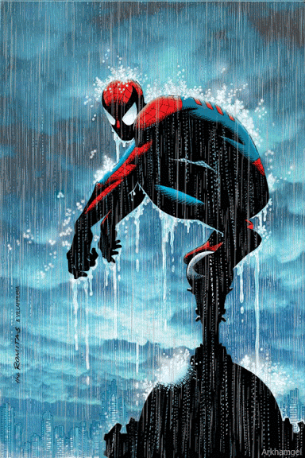
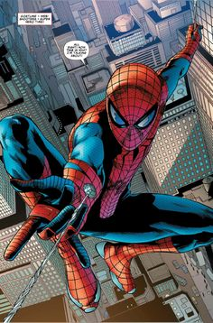
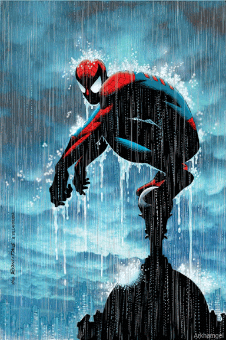
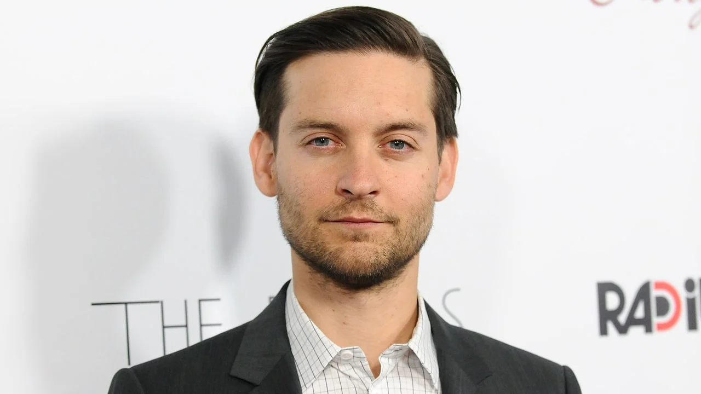
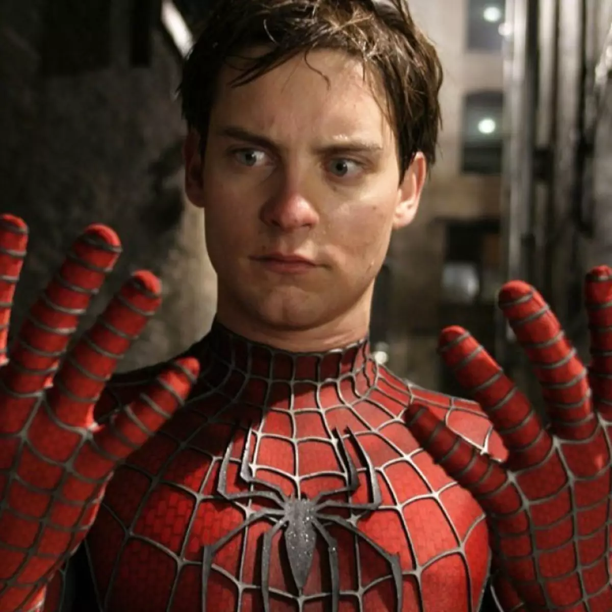
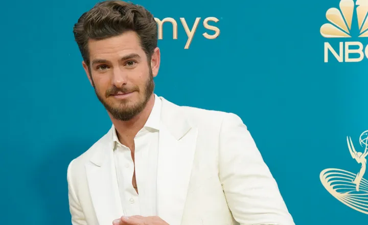
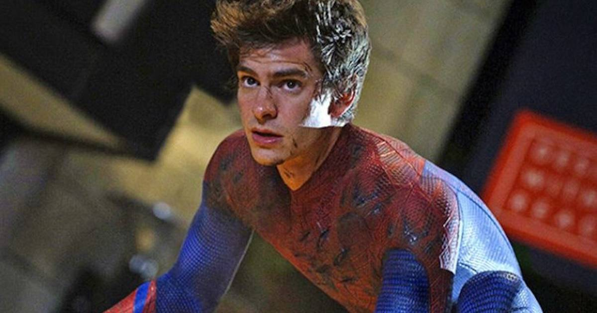
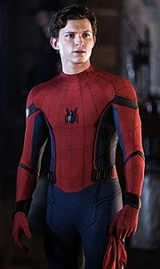
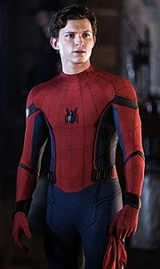

Homem Aranha
Criação e desenvolvimento
Com o sucesso do Quarteto Fantástico, Stan Lee lançou a ideia de um novo super-herói. Ele afirmou que a ideia do Homem-Aranha surgiu com o aumento do interesse de adolescentes em quadrinhos e com o desejo de criar um personagem com quem os jovens pudessem se identificar.
Biografia do Homem aranha
Em Forest Hills, Queens, Nova Iorque, o estudante de ensino médio, é um orfão que vive com seu tio Ben e tia May. Na adolescência ele é mordido por uma aranha radioativa em uma exposição científica e "adquire a agilidade e a força proporcional de um aracnídeo". Junto com a super força, Parker ganha a capacidade de andar nas paredes e tetos. Através de sua habilidade nativa para a ciência, ele desenvolve um aparelho que o permitir lançar teias artificiais. Inicialmente buscando capitalizar suas novas habilidades, Parker cria um traje e torna-se o Homem Aranha. Lutando contra a vontade de se torna um Heroi ele ignora a chance de impedir um ladrão que está roubando uma conveniência, e sua indiferença o afeta, quando o mesmo criminoso mais tarde rouba e mata seu tio Ben. Cheio de fúria, Peter Parker rastreia e prende o assassino, se tornando o famosa Homem Aranha.
  
 
Poderes do Homem Aranha
Força, agilidade e velocidade ampliadas; reflexos e sentidos sobre-humanos; capacidade de escalar paredes; capacidade de gerar diferentes tipos de teias. Essas habilidades (que podemos chamar de super-poderes) se assemelham muito às que as aranhas de fato possuem. O sentido aranha adquirido por Peter Parker funciona quase como um sexto sentido, uma espécie de habilidade premonitória, e por isso soa como um mero elemento ficcional.
-
Tom Holland
-
Tobey Maguire
 
-
Andrew Garfield
 
Atores
Devido a grande fama do personagem de Homem aranha, já foram feitos diversas adaptacões do Homem Aranha. Aqui estão alguns do atores que deram vida ao famoso personagem Homem Aranha.
 

Esses são apenas alguns dos atores que já interpretaram o Homem Aranha, existem outros atores que já deram vida ao super-herói.